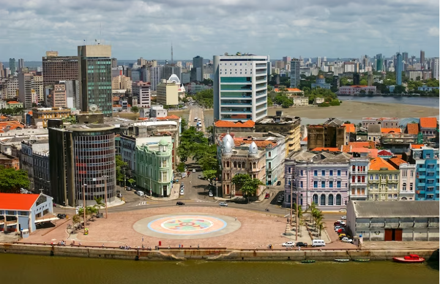

Recife
Marco Zero

O Marco Zero ou Praça Rio Branco no Recife antigo
é o lugar de referência onde a cidade nasceu e todas as medidas oficiais de distâncias rodoviárias usam como ponto de partida.
É um ponto turístico da capital de Pernambuco com importância histórica que conta o nascimento da cidade e possui forte
referência cultural. O Marco Zero recebe, diversas comemorações e manifestações e também é um lugar muito famoso para quem
busca eventos como o Carnaval.
Localizado às margens do porto velho lhe permite conhecer palacetes históricos, instalações portuárias, bares, restaurantes
e espaços culturais.